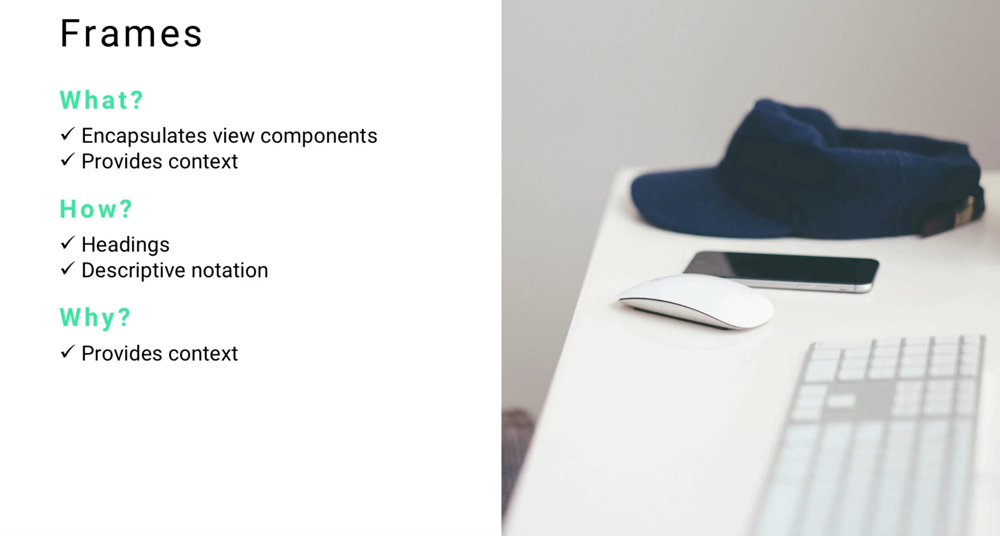
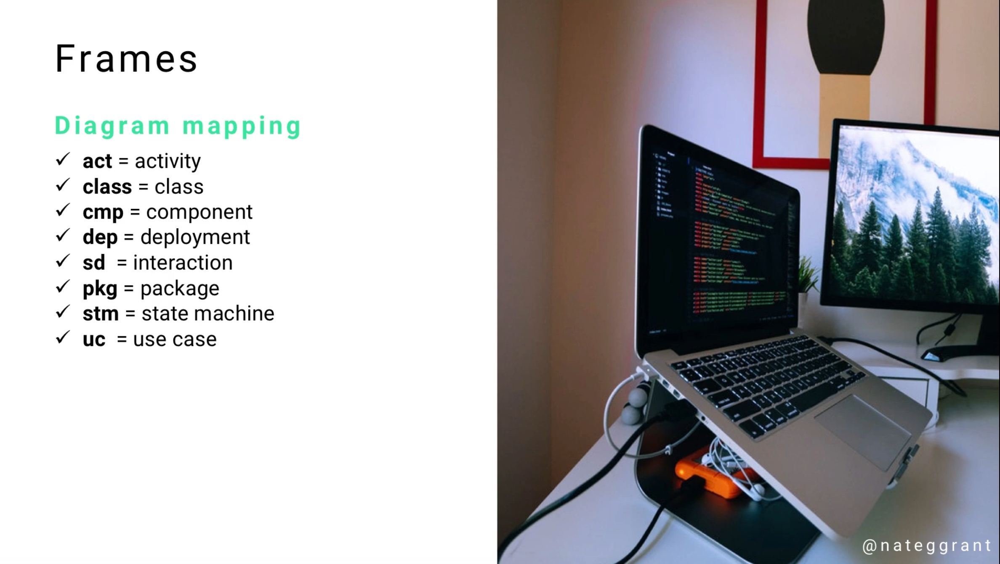
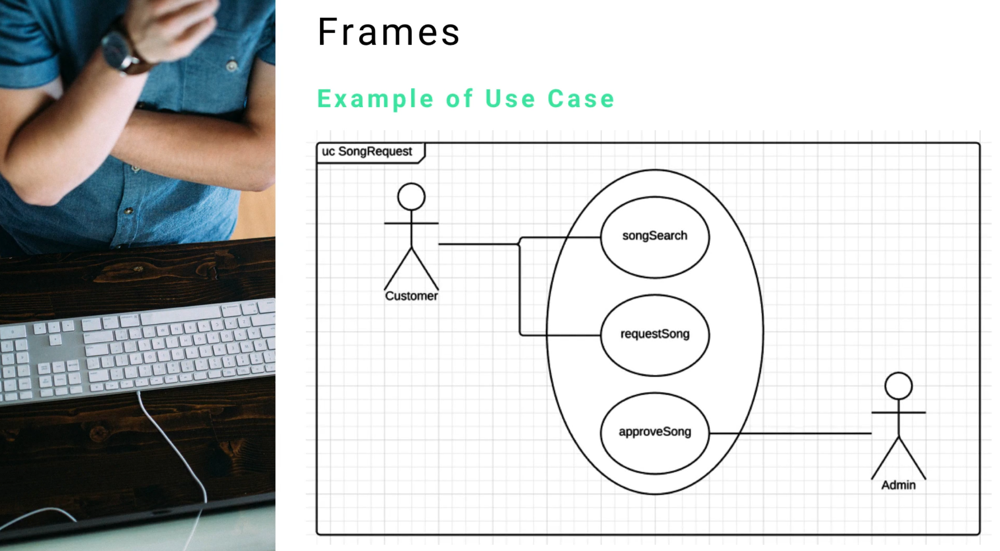
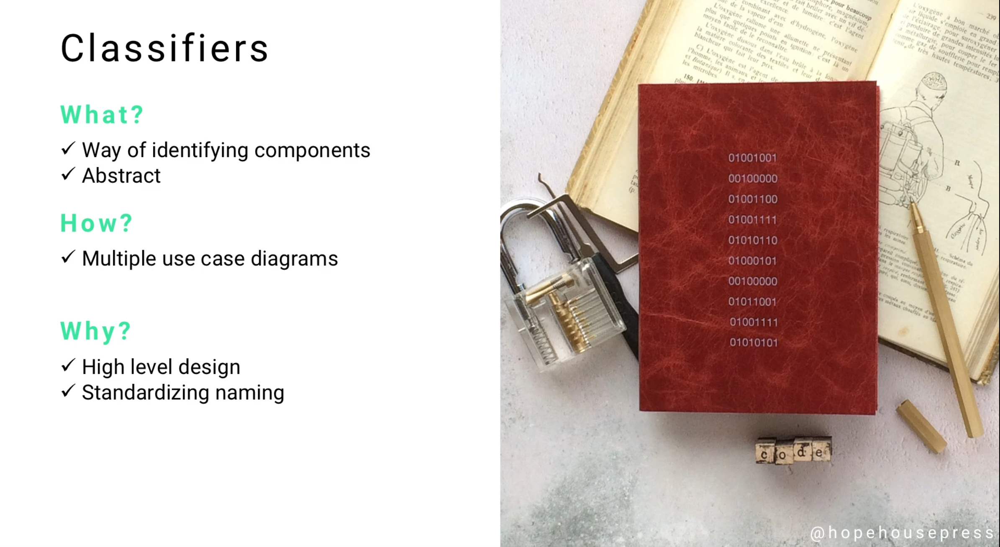
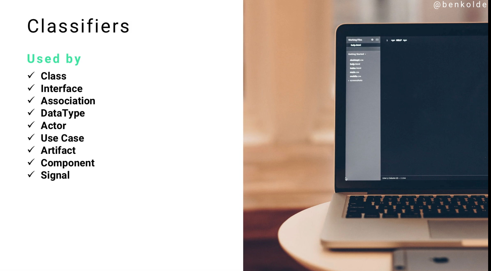
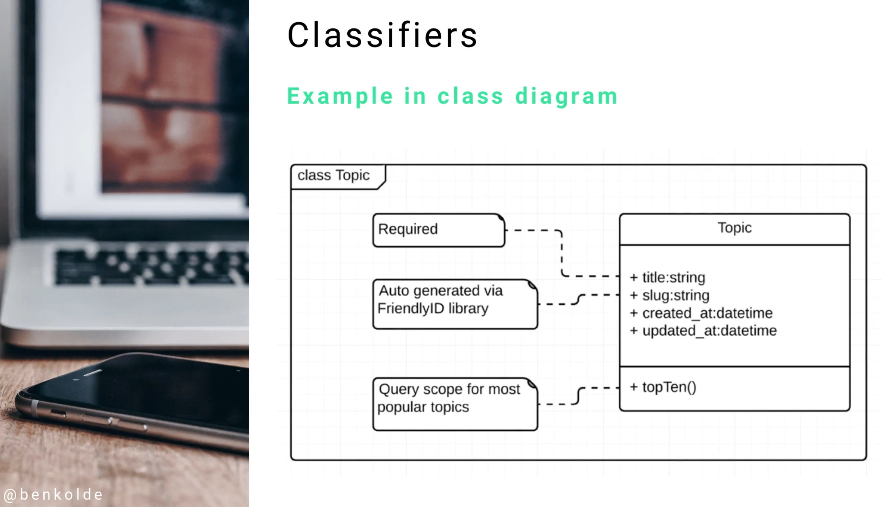

These are not the diagrams themselves, these are just some common elements that you’ll see are shared across various diagrams.
The six common elements are we’re going to walk through are:
Frames
Classifiers
Stereotypes
Comments
Dependencies
Features (which are also called Properties)
You want to instantly be able to look at a model and know what it's supposed to do.
You want to know a couple of things:
You want to know exactly what type of system it represents.
You want to know what type of diagram it is
Diagram mapping for frames has a standarized naming convention
An example of a Use Case diagram with a frame tagged in the top left
The important part to look at is in the top left-hand side, you see where it says UC SongRequest and then it's wrapping the entire thing in a box. What this allows me as a developer to see is if someone else's software engineer brings me this diagram I can instantly tell that this is a use case diagram because of the little UC in the top left-hand side. I know that it is a use case diagram for the SongRequest module so I'm going to know exactly where this needs to be implemented in the application. I also will know how to interpret the diagram.
This is how you can build a frame in UML.
Classifiers allow us to identify components. One thing that can be a little bit tricky when you're starting to use UML is that classifiers are technically abstract.
You are going to be using classifiers throughout the entire course and throughout your entire career as long as you're using UML. Essentially, what they do is exactly what the name implies, they classify items. It's high level, it allows you to have a standardized naming convention as you start building out your designs. Also as developers are reading your designs, they are going to be using classifiers as the application is built.
So what are some different components and diagrams that use classifiers?
They're used by pretty much every diagram that you're going to implement. It means that this is the high-level name, make sure to not get it confused with a class diagram. I have seen a number of different forum posts and questions from students asking if a class is a class diagram is the same as a classifier and no it is not. A classifier is simply a way of titling your different UML components and diagrams, it allows you to have one kind of standardized approach.
An example is here in a class diagram where you see "Topic" on the right-hand side. That is the name of the class and that is the classifier for the class diagram. If you are doing this in a Use Case Diagram, like we'll get into later in the course, when you name that Use Case Diagram and you name the different elements that are associated whether it's a topic or a blog post or anything like that, those are the classifiers.
